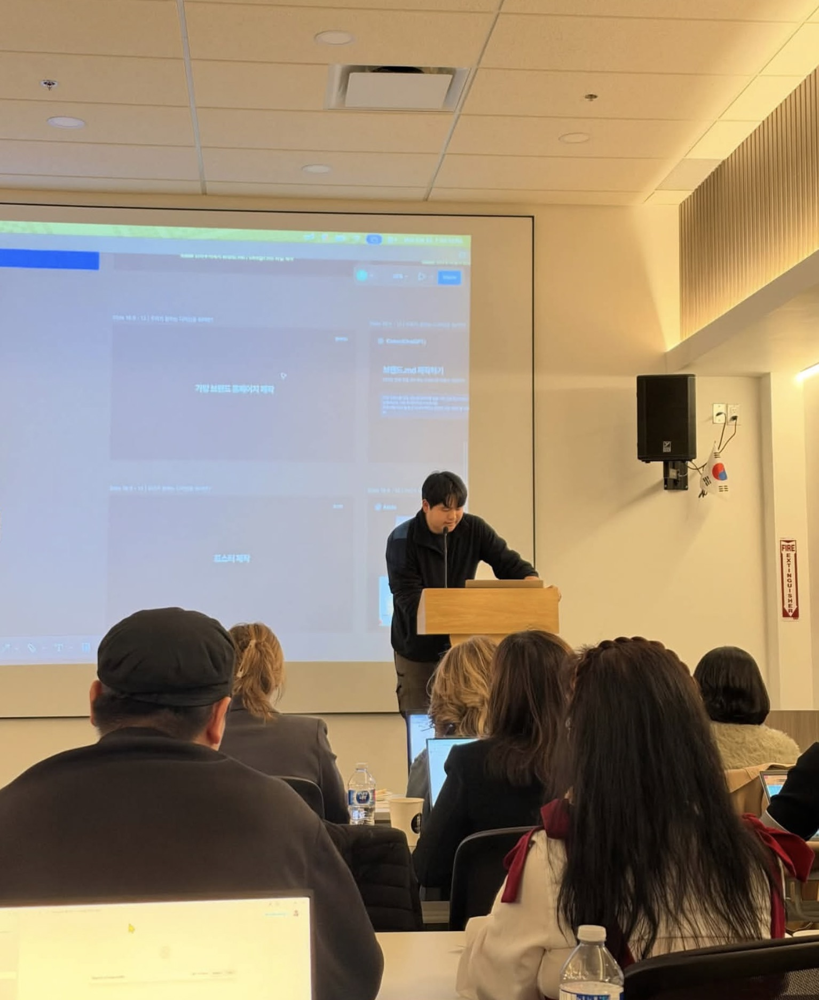
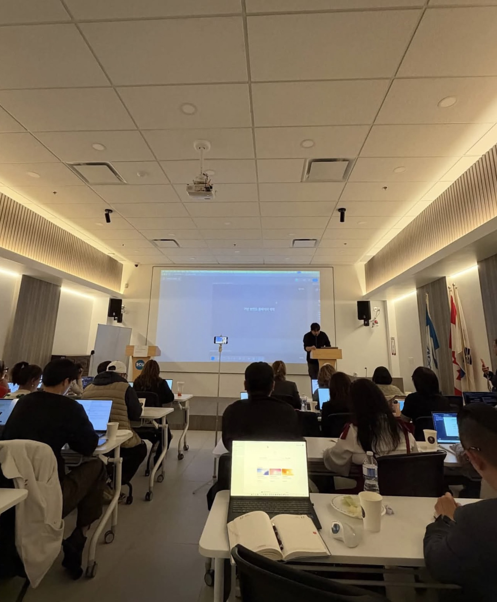

AIAI Design Talk · Vancouver
Making AI Design Feel Like Your Brand
In Vancouver, I shared how small business owners can use AI to create social media carousels, posters, and websites with a clearer sense of their own brand.

The question behind the talk
I recently gave a talk in Vancouver about a question many people have when using AI for design: how can the result look less obviously AI-generated?
Many attendees were not designers. I chose social media carousels, posters, and websites because they are formats small business owners often use, and walked through how I create them with AI.

Start with what you want to communicate
The starting point I shared was to get clear on what you want to make and what you can give AI to work with. Who are you creating for? What do you want to communicate? How should your brand look and feel?
Those answers help you choose relevant references and provide the context, content, and visual materials AI needs. They give the design a more specific direction and give you a way to judge what comes back.
Bring your own understanding to the process
I wanted to show the process of bringing your own understanding of a brand into the work, then making deliberate choices as you refine it. A clear direction also makes it easier to explain what needs to change.
What stayed with me was the enthusiasm in the room, especially from business owners who wanted to learn AI and use it in their own work. Hearing from people who found the session useful meant a lot to me. I hope the ideas we covered help them create designs that feel more like their own brands.